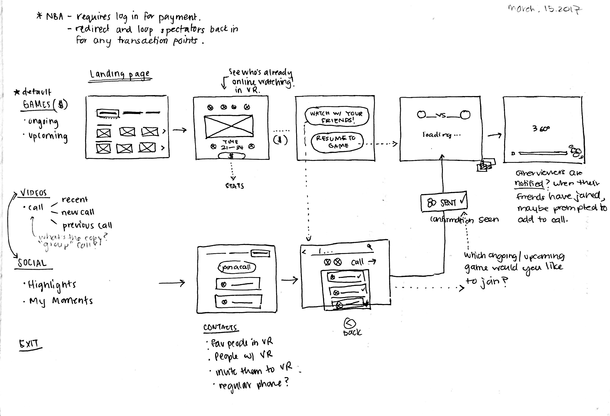
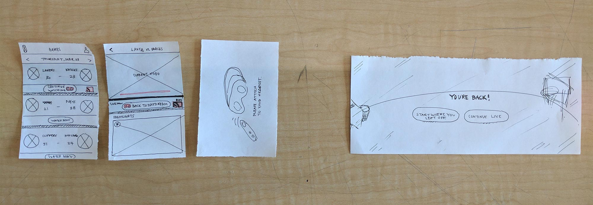
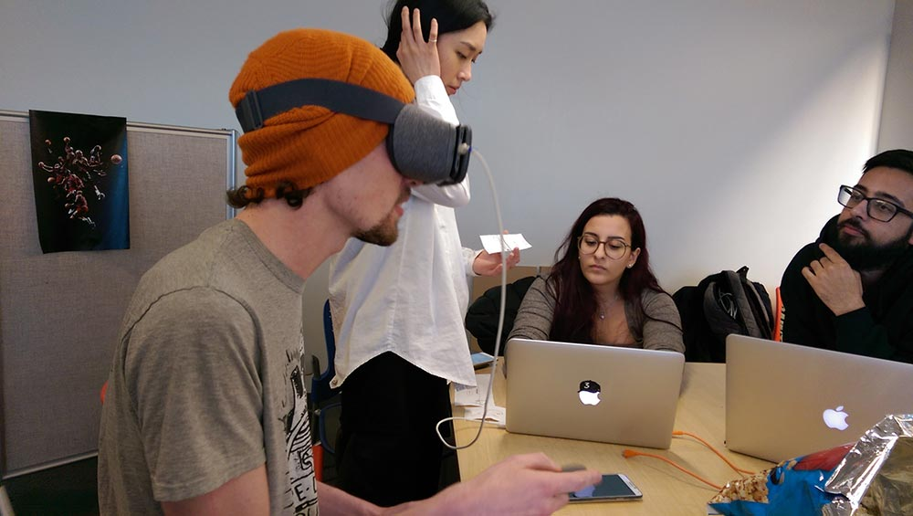

NBA in Daydream VR
Context
Created as a part of a senior interface design course, in a team of 4, over the span of 4 weeks.
Prototyping tools: Unity, Sketch, After Effects, Daydream and Google Cardboard VR headsets, Google Pixel
Role
Prototyping in VR, visual + interaction design, user research + testing.
NBA in VR is an experimental project that takes a social, customizable approach to the watching experience of a live basketball game in virtual reality.
My team and I were interested in tackling the interaction design challenges of VR, where a lot of the patterns are still new and under experimentation.
We ultimately designed and prototyped a concept product that builds on VR's affordances in order to give users a more active role in their watching experience — for instance letting them switch seats/change camera angles, save their favourite moments, watch the game with friends, etc — rather than the current NBA x NextVR offering, which essentially is just a 360 live stream of a game.
My role
UI design and prototyping: I was mainly responsible for designing the UI of our product and co-developing the prototype in Unity for the pre-game and post-game features. I also conceptualized and designed the social aspect of our product, which was weaved throughout the end-to-end journey.
User research: I planned and conducted user research in collaboration with my team, and took the lead on synthesizing our research into key insight that ultimately defined the main features of our app.
User testing: User testing was a challenge in our process, since there were zero to very few resources on how to approach testing in VR. I helped create my team's own framework, conducted user testing, and synthesized key insights which led to the final iteration of our prototype.
Prototype
pre-game — in-game — post-game
Pre-game journey
There are two entry points to watch a game - through the social tab or ongoing games. As the user, you are able to browse ongoing and upcoming games right on the landing page. Moving to the social tab allows you to see which friend/public groups are currently active, or make a new group to watch the game with. The app allows for a variety of viewing experiences based on the user's own preference, including watching the game individually, with friends, or with a larger public group.
pre-game — in-game — post-game
Player bar and favouriting highlights of the game
Tapping anywhere once will bring up the player bar. You can save a key play that you just watched with the favourite button on the player, or simply double-tap anywhere on the screen. Saved highlights can be accessed either through the indicators on the player or through the dashboard button on the bottom left.
pre-game — in-game — post-game
Modular layers of audio
In order to make the experience more customizable, the app provides control over the audio in the game. You can access this audio panel through a CTA after pressing the volume buttons on the controller. This feature not only provides NBA’s own audio presets, but also allows for changing audio levels for the call, commentator, crowd, and even music if you are simultaneously streaming songs from other apps.
pre-game — in-game — post-game
Changing seats / camera angle
You can tap on any of the contextual icons in the game environment to switch seats and change your view. Through user testing we found that switching views would be more helpful in niche moments of the game, so we designed a button that is always visible at the top to let you easily switch back to your default view.
pre-game — in-game — post-game
Browsing through ongoing games
The app button surfaces glanceable news about other games that are currently happening. You can swipe through these during the game, and if another game catches your interest, you can hop into it by holding the app button.
pre-game — in-game — post-game
Taking breaks from watching the game / being in VR
Basketball games are long, so often you might want to take a break. When you take the headset off, there is a seamless transition between the VR environment to the live stream game on the mobile app, so that you can still follow the game if you choose to. There is a prominent CTA that will take you right back in the game when you are ready to hop back into VR.
pre-game — in-game — post-game
End game dashboard
The post-game dashboard is launched when the game is over. You’ll still be able to see the call you’re in, and can get out of it when you’re done chatting. You can access your own saved highlights, as well as NBA’s top picks, as a way to wrap up the game. Upcoming games are also shown at the bottom of the dashboard, so you can see what other games you can watch next.
Process
We taught ourselves how to design, prototype, and test in VR from scratch in a very short amount of time, with the help of limited resources. Here is an overview of our 7 step process and how we approached the challenges that we faced throughout.
1 / 8 — Becoming familiar with VR through auditing existing apps
One of our first challenges was familiarizing ourselves with VR. Quickly. Through limited resources such as UXofVR and online videos on the Daydream, we managed to create a strong foundation before designing for the Daydream (check out our own UX of VR handbook). One way that I found super effective in our research process was auditing existing apps in VR that ranged from e-commerce experiences to native Daydream apps such as Youtube VR. We took notes not only on major problems that we noticed with these apps, but also opportunity areas that would inform our own app later on in the process.
In auditing the example above, we found futuristic designs and fast transitions jarring. We also realized that we need to pay extra attention to navigation and wayfinding in VR, since the patterns are not established yet and most apps, such as this one, still lack in this area.
2 / 8 — User research and learning about the basketball culture
At this point we had become more familiar with the technology, so it was important to take a pause on the technology-driven process and take a human-centered approach, in order to make sure that we are addressing the basketball fans’ needs in our product. Therefore, we created a questionnaire and conducted user research with 7 basketball fans. Our insights from the research gave birth to features such as favouriting highlights of the game, audio modularity, etc.
3 / 8 — Journey framework of the full basketball watching experience
As an experience designer first, it was important to me to make sure we have an understanding of the full sports watching experience. So I held a workshop on experience mapping that I had learned in my previous internship at Green Stone, and with my team, we mapped out the journey based on our user research. Below is the simplified version of our map that has all the features listed for each touchpoint that we designed and iterated on.
4 / 8 — Quick paper sketches of features + testing the waters in Unity
We quickly learned that unlike prototyping tools for other interfaces that we have designed (mobile, desktop, etc), Unity's nature didn’t allow for quick prototyping and iterating. Which is why we defined the whole product (all the features + journeys) through quick sketches and used the template provided by Facebook Design in order to make sure we were placing the UI elements within spatial ranges that made sense. This helped us get a good grasp of the environment’s scale and spatial placement and design coherent pre-game, in-game and post-game journeys, before getting caught in high fidelity mock ups and prototypes.
Early sketches for the social aspect of the watching experience — joining a group call in the pre-game journey.
Quick mock ups to test spatial placement of UI elements in VR using the Facebook VR template.
5 / 8 — First iteration of the prototype
This was the most challenging step for the team. There was a steep learning curve in the beginning, which pushed us to find ways to hack the system and speed up the process. We followed some tutorials that helped us create a base file with 360 video environment with Daydream controls, and then used a combination of different tools including the Facebook VR template and Google VR SDK to prototype.
A snippet of the initial prototype. From testing, we got feedback on issues such as the visibility of UI elements and the interaction of favouriting a highlight and addressed them in the 2nd iteration.
6 / 8 — User testing
Once we had the first iteration of our prototype, we tested with 5 users. We closely followed the journey framework for the testing scenario, and focused it mainly on 4 user flows - finding and selecting a game to watch (both through the games tab and social), watching the game and interacting with in-game features, taking a break from watching the game and hoping back in, and finally the end-game flow. During testing, I had the phone connected to my laptop so we could observe the user’s behaviour and took notes accordingly. Once testing was over, I took all of my notes and synthesized them into a “user feedback and system refinement” document that led to the 2nd and final iteration of the app for this project.
For the 3rd flow, which we called "in and out of VR transition", we used paper sketches to fill in the gap and communicate the screens that the user would see on their mobile app.
7 / 8 — Team critique session
This was one of the most enjoyable parts within our process for me. After testing, we printed out all of the screens, put them all up on the wall, and went around the room with post-its to do a full critique and evaluation of our product. I also made sure we were constantly referring to the findings that came out of user testing for every feature and journey. We walked out of that meeting with clear objectives and considerations for the final prototype.
8 / 8 — 2nd and final iteration
The second protoype went a lot more smoothly, since we were more familiar and comfortable with our tools. Since the prototype files would get huge quickly and end up crashing every time they were loaded on the phone, we split up the animations between 60 fps sprite sheets from After Effects and Unity's own more basic animations. We iterated on the UI and refined the visuals based on the feedback that we got from users, and finally produced Sketch files for different journeys with specific notations for development. Producing the high fidelity prototype was the final step of our process.
Reflection
One of my takeaways was that the only way to create content for a new and unfamiliar medium is to jump right into it. There is a huge barrier for designers to approach VR because currently there aren’t many user-friendly prototyping tools available. However, my team and I found our way around this challenge by first doing simple and quick exercises in Unity, which made approaching it a lot less intimidating.
It’s easy to get carried away with all the hype around emerging technologies such as VR. But it was important to me to keep our designs grounded and make sure that every single feature was addressing a certain need, rather than being just a cool add-on.
Overall, I am very proud of the outcome, but most importantly, of our process and how we moved through the project from not knowing anything about designing for VR to producing a well thought-out, working prototype.